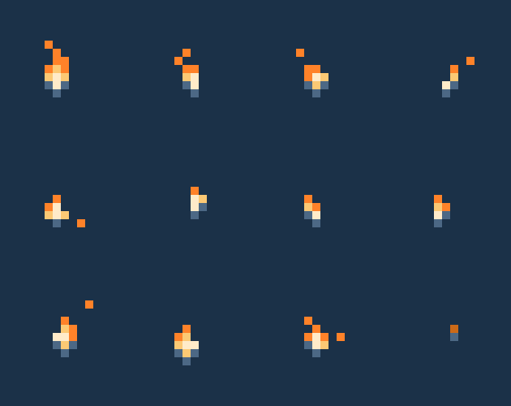

BRIGHT WARM TAVERN — STYLE REFERENCE
NOT dark moody dungeons — warm amber, cream walls, daylight windows, cozy glow
🎨 STYLE REFERENCES (open to see the target look)

Guild Tavern — PyxelRayn
Isometric, 201 colors, warm amber wood + cream walls. This is the TARGET STYLE: bright, readable, cozy.

Loong Bistro — Ratcha
Tiny but bright, limited palette, clean shapes. Good reference for minimal readable style.

Cozy Red Roof Tavern
Red awning + yellow lights, warm brown walls. Bright inviting exterior — ideal HOME screen mood.
🔥 ANIMATED MATERIALS — YES, GIF works as CSS background!

Candle Flame (CC0)
apicici / itch.io — 630×500, 4 frames looping. Works as animated CSS background-image. Free for any use.
LIVE DEMO — Animated Fireplace
Flame GIF composited over stone fireplace frame. Same flame.gif, positioned behind a CSS cutout. Pure CSS / HTML — no WebGL needed.
📝 UPDATED PROMPT — BRIGHT WARM TONE
## BRIGHT WARM TAVERN — AI IMAGE GENERATION PROMPT (EXAMPLE FOR HOME SCREEN)
pixel art, 16-bit retro game style, wide bright warm exterior of a cozy medieval fantasy tavern,
sunlit stone walls with ivy, cream-colored plaster, warm honey-colored wooden beams,
glowing amber windows, welcoming open wooden door, flower boxes under windows,
bright green vines climbing the walls, wooden signboard with no text,
cobblestone path in warm sunlight, blue sky with soft white clouds above,
daylight scene, bright cheerful atmosphere, rich warm amber, cream, and green tones,
NO dark shadows, NO nighttime, NO black background, NO moody lighting,
no people, no text, no UI,
wide horizontal landscape composition (2868x1320, ~2.17:1 aspect ratio),
clean sharp pixel edges, bright and inviting atmosphere
KEY DIFFERENCES FROM PREVIOUS PROMPTS:
- "at dusk" → "daylight scene, blue sky with clouds"
- "night sky" → "bright cheerful atmosphere"
- "dark warm tones" → "bright warm amber, cream, and green tones"
- ADDED: "NO dark shadows, NO nighttime, NO black background"
📋 SUMMARY
YES — animated GIF/WebP/MP4 can be used as CSS background-image in browsers.
The flame.gif above is CC0 licensed and works as background-image for a fireplace element.
For your project:
1. Use the BRIGHT WARM style prompts above (not the dark ones from before)
2. Layer animated elements (flames, candle flicker) over static backgrounds via CSS
3. This gives you a living, breathing tavern without heavy performance cost
The 5 existing prompt files need to be updated to BRIGHT WARM tone.
Want me to rewrite all 5 prompts with bright/daylight/cream tones?
(Or you can use this page's example prompt as the new style guide)